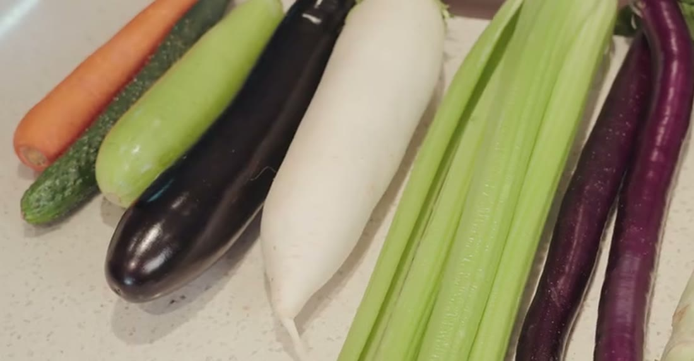
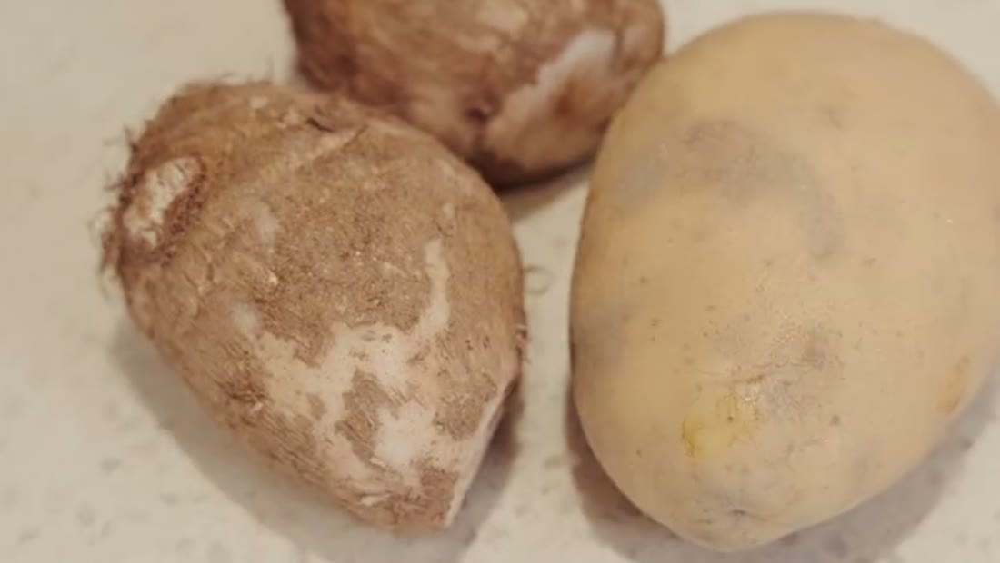
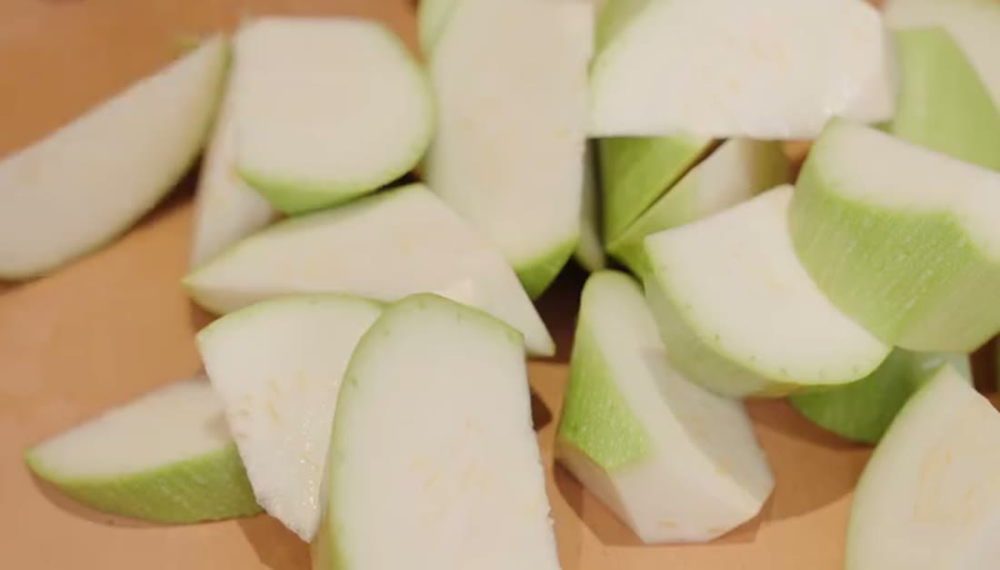
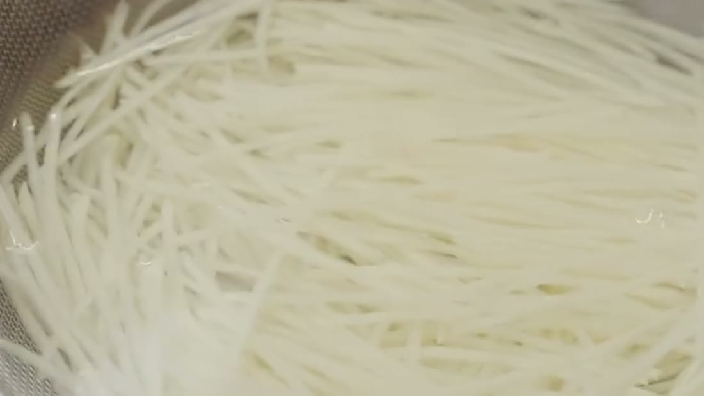
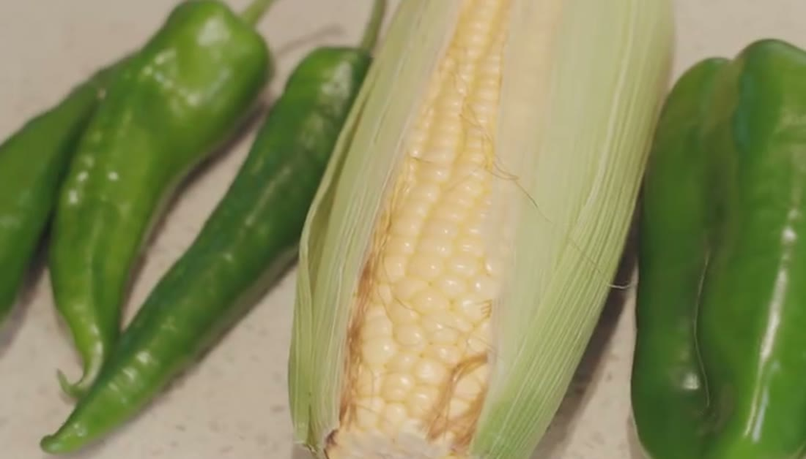
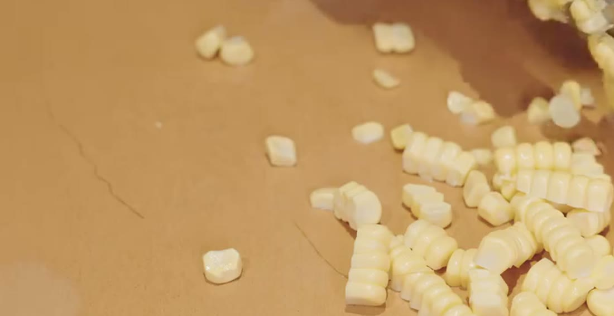
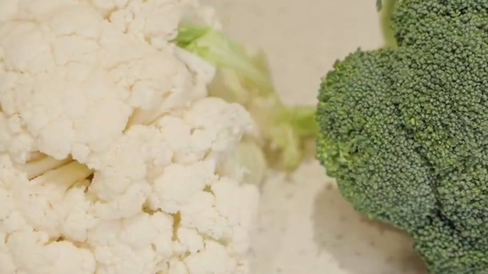
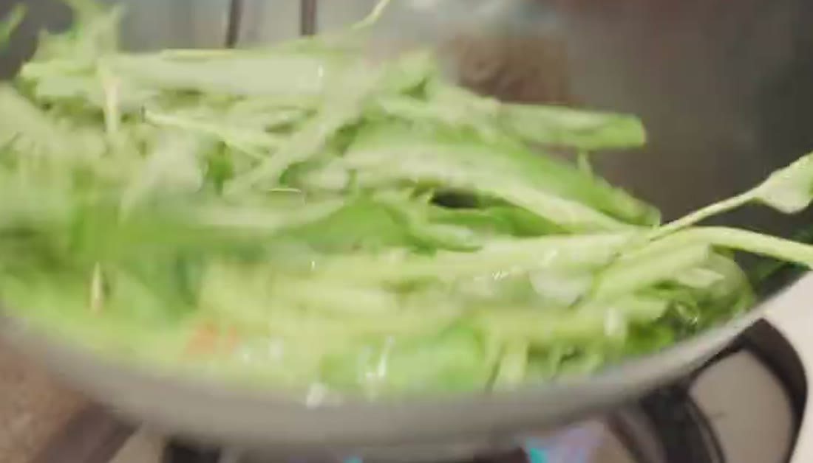

一条 5 分钟的 B 站视频，把洋葱、土豆、黄瓜、玉米、西兰花按几何形状分成 5 类，每类只配一套刀法。这篇把视频里的角度、手法和弹幕里的补刀，整理成能照着做的一步步。

适合谁：做饭频率一周三次以上、切菜还靠「感觉」的人；想一次把洋葱丝、土豆丝、黄瓜片切利索的人。
不适合谁：想找菜谱的（这里没有一道菜的做法）；想学切肉的（视频明确没讲，弹幕里也有人在问）。
视频开篇就把两类最实用的问题摆出来了：怎么最快拿到茄丁、黄瓜丝、葱末，以及西兰花怎么切才不掉渣00:00:00。它的解法不是「背 30 种刀法」，而是先看形状，再定角度。
第一个参数是纹理方向。同一颗洋葱，顺纹切和逆纹切，下锅后的结果完全不同——这是全片最值钱的一条。
顺纹切（刀平行于蔬菜的轴线）：洋葱丝加热后更容易保持形状，适合做泡菜，或者炒法式洋葱汤00:00:39。
逆纹切（刀垂直于轴线）：生吃口感爽脆，但一炒就容易碎，能化到汤里，适合炖菜打底00:00:45。
所以不是「哪种切法更好」，而是先想这道菜要什么口感，再决定往哪个方向下刀。
第二个参数是刀与轴线的夹角。它决定片的大小：蔬菜截面直径越小，刀与轴线的夹角就要相应减小，才能切出更大的片00:02:33。具体数值在第 4 节。
一句话做法：先对半切开，让底面平稳，再决定顺纹还是逆纹。这一类包括洋葱、卷心菜、白菜、番茄四种00:00:23。
第一步永远是一分为二——不是为了对称，是因为切开后底面平稳，「不会乱动」00:00:32。切丝前先在根部斜着来两刀，把根去掉00:00:34。
接着是分岔口：顺着纹理切，出来的是能保持形状的洋葱丝；垂直于纹理切，出来的是容易炒碎的洋葱。选哪个，看你要做泡菜还是炖菜。
视频提到传统西餐技法是在洋葱上横竖各来几刀再切丁，但它紧接着给了一句很实在的评价：这要求刀非常锋利，相对也比较危险00:00:59。
它更推荐的做法是利用洋葱自己的结构：洋葱内部的纹理是一圈一圈的同心圆00:01:05，所以从最外侧切向圆心，每一层自然就切得均匀00:01:07。下刀间隔大一点就是块，密一点就是末00:01:11。安全、快，还不用练刀工。
切完的洋葱丝用清水投洗一遍，可以洗掉一部分辛辣，吃起来更清甜00:01:17。
至于「切洋葱怎么不流泪」，视频卖了个关子，说要留到「洋葱食用指南」那期讲00:01:21。所以这篇不给偏方——弹幕里那些戴泳镜、含口水的说法，见第 8 节，都标了来源，没验证过。
卷心菜和白菜相当于放大版的洋葱，结构类似，切丝切丁的方法可以通用00:01:27；番茄虽然不是多层结构，也能借用这套思路切丁00:01:33。

一句话做法：侧面切掉一块当底座，第一片粘在刀背上，之后想切丝切条切丁都只是叠法不同。
去皮时手要避开削皮刀00:01:45，这条比什么刀法都重要。然后从侧面切掉一块，把这一面朝下放——底面稳了，后面才好下刀00:01:48。
有个小技巧值得单独记：把第一片粘在刀上，后面切的时候就不会一片片往刀面上粘00:01:50。
| 你要的形状 | 怎么下刀 | 时间戳 |
|---|---|---|
| 小片 | 垂直于长轴切片 | 00:01:55 |
| 丝 | 切好的片层叠起来，再切 | 00:01:59 |
| 薯条 | 切厚片，叠起来切条 | 00:02:02 |
| 丁 | 薯条转 90 度再切 | 00:02:04 |
土豆和芋头切开变色，是酚类物质和酶发生氧化反应00:02:06，切好尽快泡水就能避免。泡水还有第二个作用：洗掉表面多余的淀粉。要炒土豆丝，就得投到水清澈，炒出来才清爽不粘00:02:15。

一句话做法：切片靠夹角，切条靠叠，切块靠转角。茄子、黄瓜、萝卜、大葱、西葫芦、青笋、西芹都属于这一类00:02:20。
长茄子：刀与轴线 30–45 度00:02:39。
黄瓜：基本要 15 度，片才漂亮00:02:41。
原因在上一节说过：截面越细，角度越小。黄瓜比茄子细，所以角度要压得更低。
切出来的片再叠起来切，就能得到两头带皮的漂亮条状——茄条、黄瓜丝都是这么来的00:02:45。
菱形片：第一步把下刀间距拉大，先切出斜块，再转 90 度，让切面贴着砧板切，就得到菱形片了00:02:50。
滚刀块：斜着架刀，从端头开始，每一刀都把蔬菜转动 30–45 度左右，并且每一刀都经过截面的中心00:03:03。块的大小，靠下刀角度的深浅来控制。这样切出来的块有棱有角，各面受热不一样，吃到嘴里能尝到不同口感00:03:13。
先把蔬菜一分为二，然后像切洋葱那样朝圆心方向切，根部连着不要切断，再改刀，就能切出每片带皮的条或丁00:03:24。
如果要方正的蔬菜丁，就走三步：先片、再条、最后垂直于长条切丁00:03:28。西芹、茄子、黄瓜都能这么处理。

大葱是多层圆柱结构，处理方法略有不同：可以整根旋转着划几刀，再垂直于轴线切，这是最省事的家庭版葱末切法00:03:40。
想要更规矩漂亮的葱丝，就切断之后先划开，把中间的部分拿掉，再平铺切丝；泡水还能打卷00:03:53。

一句话做法：先去掉不能吃的中心，剩下的部分再按平铺的片来切。
切断的时候建议用刀的根部下刀00:04:00；感觉切到玉米芯的时候，用手轻拍几下就能切断了00:04:03。
只取玉米粒的话，就切断之后先切掉一排，再转着玉米切，能轻松剥下来00:04:09。

先去头尾，下刀要浅，就能去掉蒂和筋00:04:15。按压平铺之后，切片或切丝都很方便00:04:18。辣椒也可以按圆柱类的方法切成滚刀块——按炒菜想要的形状选就行00:04:21。

一句话做法：从根部冲水洗，头朝下切断根部，再顺着根部下刀、不切到底，用手掰断。
顺序是先洗后切：从根部冲水清洗00:04:34，然后头朝下把根部切断，得到大块的花球00:04:36。
关键的一步在分小朵：从根部下刀，但不要切到底，轻轻掰断，头部就会自然分开，不会有一堆碎末00:04:42。这一条直接解决了「切西兰花满案板碎渣」的问题。
根部别扔。它其实也好吃，可以当成圆柱体蔬菜来切片，一起焯水、单独炒，或者做泡菜00:04:48。
| 坑 | 怎么避 | 来源 |
|---|---|---|
| 洋葱切丁切成「一盘碎」 | 别剁，顺着同心圆层走刀，从外向内、根部不切断 | 视频 00:01:07 |
| 土豆丝粘成坨 | 切片后均匀叠放，切完投水到清澈 | 视频 00:02:15 |
| 西兰花满案板碎渣 | 根部下刀不切到底，改成手掰 | 视频 00:04:42 |
| 切到一半刀打滑 | 先把侧面切一块、底面放平再下刀 | 视频 00:00:32 |
| 刀不够快还硬切 | 西餐那套十字刀法要求刀很锋利、也更危险，新手直接用放射法 | 视频 00:00:59 |
| 绿叶菜切完泡水 | 先洗再切；切完再泡会流失水溶性维生素，炒的时候出水还影响锅温 | 视频 00:04:57 |
最后一条值得展开：除了需要防止氧化变色的（比如土豆），大多数蔬菜都该先清洗再切配；绿叶菜尤其不能切完再泡水00:04:54。

这一节的每句话都来自弹幕，不是视频作者说的，也没经过验证——放在这里是因为它们补上了视频没讲的部分。
| 弹幕在说什么 | 出现在 | 值不值得听 |
|---|---|---|
| 「我还想知道肉的切法，比如什么是横切、什么是顺着纹理切」 | 00:00:19 | 问到点子上了，但这期确实没讲 |
| 「这个土豆丝的叠反了，上下颠倒容易滑」 | 00:01:59 | 有道理：叠放方向一致才不会打滑 |
| 「这样有点容易把底部的玉米粒压碎，切到芯把刀和玉米倒过来敲也可以」 | 00:04:03 | 是个更稳的替代手法 |
| 「你应该拿个紫洋葱做例子，白洋葱看不清」 | 00:00:42 | 对新手有用：紫洋葱的层次更清楚 |
| 「我选择擦丝器」 | 00:02:06 | 省事，但丝的口感会软一些 |
| 「我切洋葱时候戴泳镜，物理隔绝」 | 00:01:17 | 偏方，未验证 |
| 「白菜卷心菜其实手撕最好吃」 | — | 口味偏好，不是刀工问题 |
还有两件事从弹幕里能直接看出来：一是「青年大学习」这条弹幕出现了 61 次，观众自嘲在听课；二是不少人喊「已经听不懂了」「没看懂」00:00:55——所以第一次看别开 2 倍速，1.25 倍刚刚好。